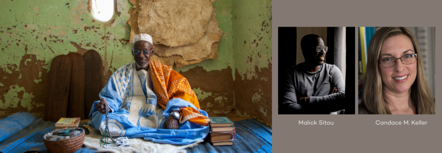

Des Marabouts de Djenné: Exhibition Keynote
RSVP
The thirty portraits in Hamdia Traoré’s series Des marabouts de Djenné (Marabouts of Jenne) reflect his intimate connections to the city’s people and deep history. Learned and devout, marabouts teach in Jenne’s over 50 Qur’anic schools, offer spiritual guidance, and treat ailments through their knowledge of the Qur’an. This public program will explore traditions of Islamic portraiture in Mali, including portraits of marabouts. Candace M. Keller, Associate Professor of Art History & Visual Culture at Michigan State University, is the co-founder of the Archive of Malian Photography (AMP) and serves as a curatorial advisor for the exhibition Hamdia Traoré’s “Des marabouts de Djenné” and Muslim Portraiture in Mali. Photographer Malick Sitou has worked closely with Keller and AMP. Through his father, photographer Tijani Sitou, he has interacted with many photographers in Mali from childhood. Keller and Sitou will discuss Hamdia Traoré’s portraits of marabouts in relation to an earlier generation of Muslim portraiture, and will also consider the role of archives in preserving the history of West African photography. The discussion will be introduced by Kathleen Bickford Berzock, and the question and answer session will be moderated by Uche Okpa-Iroha, photographer and the 2026 Block Museum Curatorial Graduate Fellow.
Participation level – light, audience members can choose to participate in the Q&A at the close of the program.
Programs are open to all, on a first-come first-served basis. RSVPs are not required, but are appreciated.
ABOUT THE SPEAKERS
Kathleen Bickford Berzock is Associate Director of Curatorial Affairs at Northwestern University’s Block Museum of Art, Professor of Practice in Northwestern’s Department of Anthropology, and affiliated faculty in the Department of Art History and the Program of African Studies.
Candace M. Keller is Director of the Archive of Malian Photography and Associate Professor of Art History & Visual Culture at Michigan State University, where she serves as the Associate Director of Matrix: The Center for Digital Humanities and Social Sciences. Her research on the histories of photography in Mali, West Africa, has appeared in several publications, invited lectures, and conference presentations, and has been generously supported by the National Endowment for the Humanities and the British Library. Her book, Imaging Culture: Photography in Mali, West Africa was published by Indiana University Press in 2021.
Malick Sitou began his career as a professional photographer in Mali, under the mentorship of his father, Tijani Sitou, and his namesake Malick Sidibé. Since 2004, he has conducted research on the histories of photographic practice in Mali alongside Dr. Candace M. Keller. In 2006, a collection of his photographs was exhibited at Indiana University’s Eskenazi Museum of Art. Six years later, he joined the Archive of Malian Photography as the custodian of Tijani Sitou’s photographic archive. Today, Sitou often serves as a consultant for exhibitions of West African photography and has participated in panel discussions and interviews for various projects. He also holds the position of Court Planner at Bridgeport Judicial District in Connecticut, after earning his M.A. degree in Global Development and Peace in 2019.